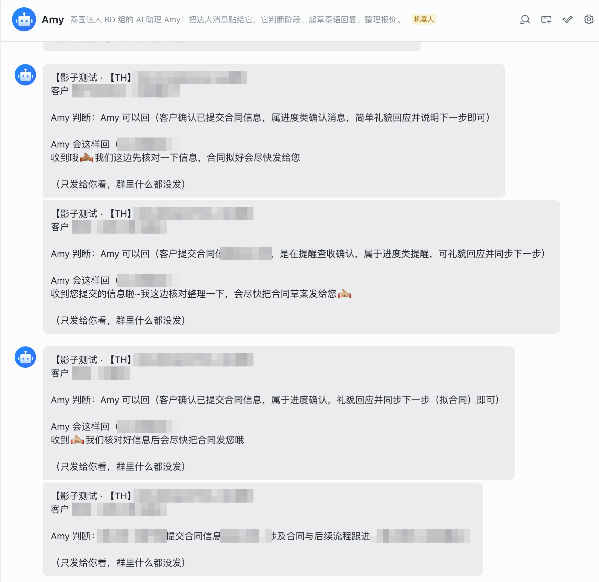

KOL 数字员工
给泰国达人 BD 组用。痛点：客户进群后，一份完整的 brief 要来回确认三四天；筛人、分名单每单几小时；建联全凭个人经验。KOL 是付费、一对一谈的，所以 AI 只接前半段，看内容、谈价、报价留给人。
流程：谁做哪一步
🤖 AI 数字员工 · ✅ AI 做好，人确认后才往下走 · 👤 人工
前半段交给数字员工，判断留给人
Before人在群里收资料、催资料、筛人、分名单AfterAI 跑完前半段，人只抽查和判断
01收 brief🤖 AI
- 客户进群发表单；没填全最多提醒 3 次，口吻是通知不是追问；还没填转人
02初筛达人🤖 AI
- 按 brief 的类目、粉丝区间、近 30 天 GMV 在达人数据平台筛；客户要 N 个，初筛 6N 个
03去重、分名单🤖 AI
- 和内部达人库比对，标「合作过 / 联系过 / 新达人」；平分给人，发到商务群
04抽查✅ 人工确认
- 每单抽 5 个看筛选条件对不对；有错反馈，改规则
05看内容、建联👤 人工 + 🤖 AI
- 人看 TikTok 内容标合适不合适；建联和日常回复由 AI 用人的账号来做，正在影子测试：AI 先写，对照人发出的那条，差得远的周会过一遍，改规则
06谈价、报价、执行👤 人工
- 涉及价格、定金、合同的由人谈，人对外报价；脚本本地化、拍摄、发布由人做；达人、建联、报价记录由 AI 写回达人库，每天在客户群播一次进度
下一步
正在测试AI 用人的账号做简单回复：影子测试跑一轮，判断准、采用率稳了就放开
计划中接 LINE 官方号，达人的回复自动进系统，跟进、追问、报价结构化在里面完成
长什么样
